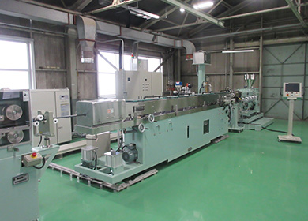
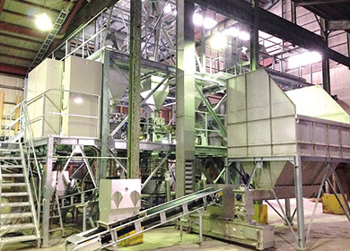

- HOME
- 研究・技術開発
- 研究・技術開発体制
- 開発・エンジニアリング組織
- 樹脂・ケミカル関連技術部署
樹脂・ケミカル関連技術部署
樹脂・ケミカル関連技術部署は、コア技術である有機合成化学、高分子化学と、化学工学、ナノテクノロジー、計算科学や高分子加工技術を融合した革新プロセス、先端材料の開発により、地球環境保全に貢献しています。また、海外の生産・技術開発拠点と連携して、競争力に優れる樹脂・ケミカル製品およびソリューションを国内外のお客様に提供しています。樹脂・ケミカル生産で培ったケミカルプロセス技術は樹脂・ケミカル事業だけでなく全社の事業拡大および環境防災技術向上に貢献しています。
樹脂技術部
ナイロン、PBT、PPS、LCPなどのエンジニアリングプラスチック、および炭素繊維強化熱可塑性樹脂の新製品開発、用途開発、生産技術開発を行っており、成形・加工技術、分析・CAE解析技術も有しています。チューブ押出成形機を導入し、素材開発と成形・加工技術の融合を図り、お客様へのトータルソリューションの提案を推進しています。また、海外拠点への技術輸出、海外顧客へのサポートも海外拠点と連携して行っています。
千葉工場トヨラック技術室
東レABS樹脂 トヨラック®の材料開発、用途開発、生産技術開発を行っています。また、日系ABS樹脂メーカーで唯一の海外重合拠点と連携して海外顧客のサポートも行っています。
滋賀事業場ペフ製造部技術室
電子線架橋ポリオレフィン樹脂発泡体 トーレペフ®の材料開発、用途開発、生産技術開発を行っています。また、米国工場と連携して海外顧客のサポートも行っています。
ケミカルプロセス技術部
ケミカル製品（合繊・プラスチック原料、ファインケミカル製品、ゼオライト触媒、ファインポリマー・機能性微粒子）および樹脂製品（ナイロン、PPS、PBT、LCP、PAI）の新製品およびその生産技術開発を行っています。また、東レ理念の中核をなすサステナビリティに基づき、ナイロン６のケミカルリサイクルやバイオベースポリマー原料を開発しています。さらに、樹脂・ケミカル生産で培ったケミカルプロセス技術を全社に展開し、先端材料の工業化、革新プロセス開発、環境防災技術向上に貢献しています。

チューブ押出成形機

ケミカル新製品生産設備